Pade approximation
| > | with(numapprox): |
Pade approximants are rational functions whose coefficients, like those of Taylor polynomials, are chosen to match as many derivatives of a given function at a point as possible. They tend to have much better global approximation properties than polynomials.
Here is the type (1,1) approximation to exp(z) at the origin:
| > | P:= pade( exp(z), z=0, [1,1] ); |
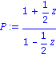
The coefficients are enough to match the first three terms of the Taylor series.
| > | series( P, z=0, 5 ); |
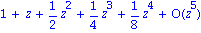
Higher degrees allow more coefficients to be matched.
| > | P:= pade( exp(z), z=0, [2,2] ); |
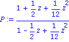
| > | series( P, z=0, 7 ); |
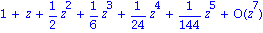
However, the Pade approximation gets more accuracy from the same amount of information.
| > | T:= 1+z+z^2/2+z^3/6+z^4/24; |
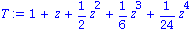
| > | plot( {exp(z)-P,exp(z)-T}, z=-1..1 ); |
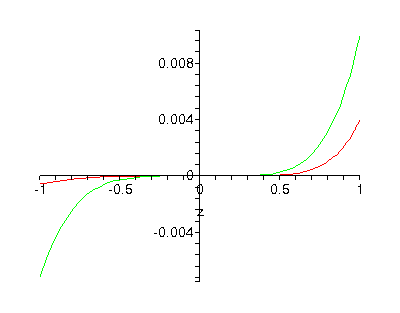
The difference is much more dramatic as more coefficients are used.
| > | P:= pade( exp(z), z=0, [4,4] ); |
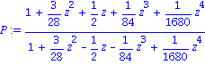
| > | T:= convert( series( exp(z), z=0, 9 ), polynom ); |
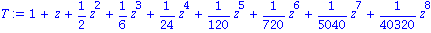
| > | plots[logplot]( {abs(exp(z)-P),abs(exp(z)-T)}, z=-1..1 ); |
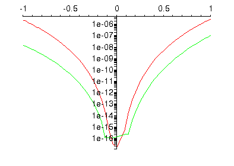
The real value of Pade approximants shows up when one considers behavior in the complex plane.
| > | f:= exp(z)/(1+z^2); |
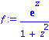
| > | P:= pade( f, z=0, [4,4] ); |
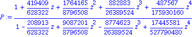
| > | plot( f-P, z=-2..2 ); |
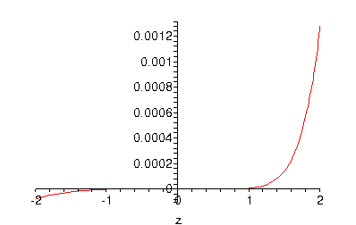
| > | T:= convert( series( f, z=0, 9 ), polynom ); |
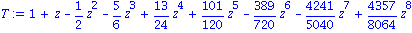
| > | plot( f-T, z=-2..2 ); |
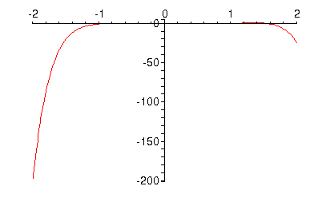
Although f is a perfectly nice function on the real line, it has pole singularities at z=i and z=-i. Even though they are not real, they ruin the convergence properties of the Taylor approximation for |z| > 1. But the Pade approximant is able to pick up those singularities explicitly and get a more globally useful approximation.
| > | convert( P, parfrac, z, complex ); |
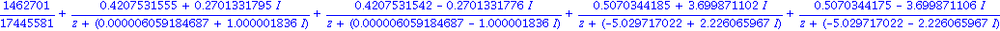